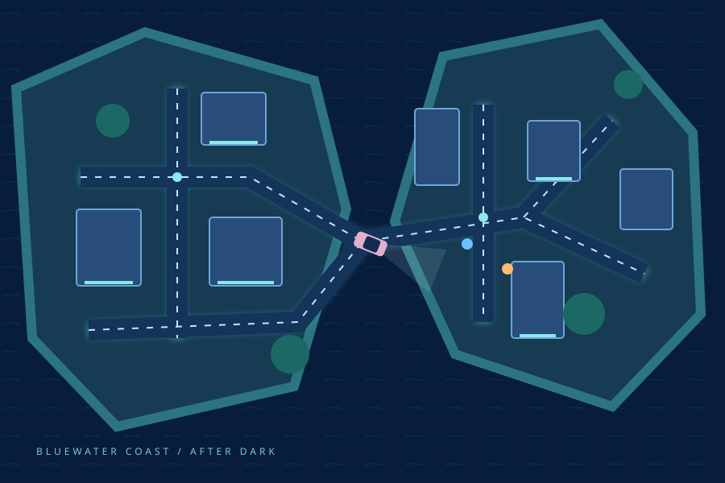
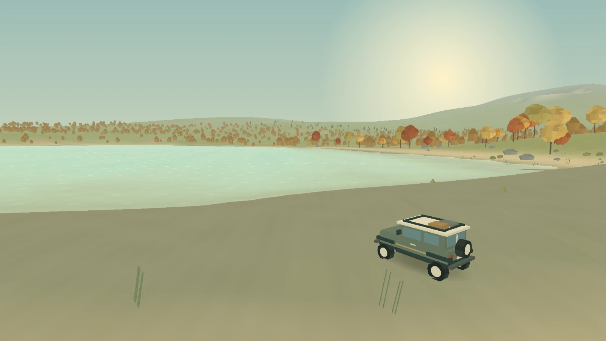
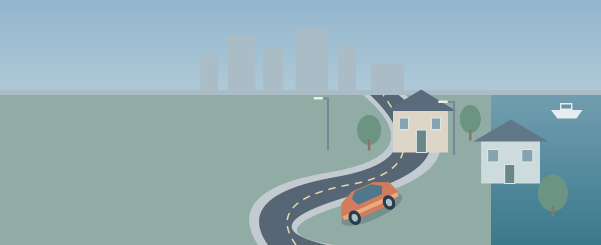
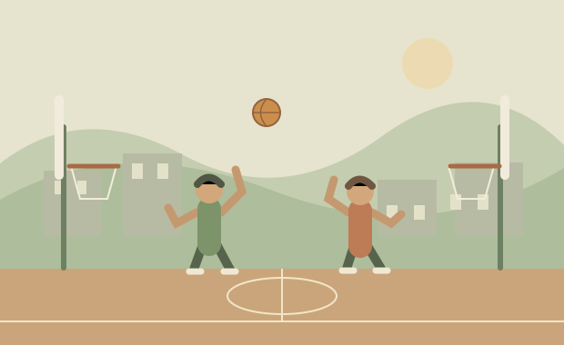
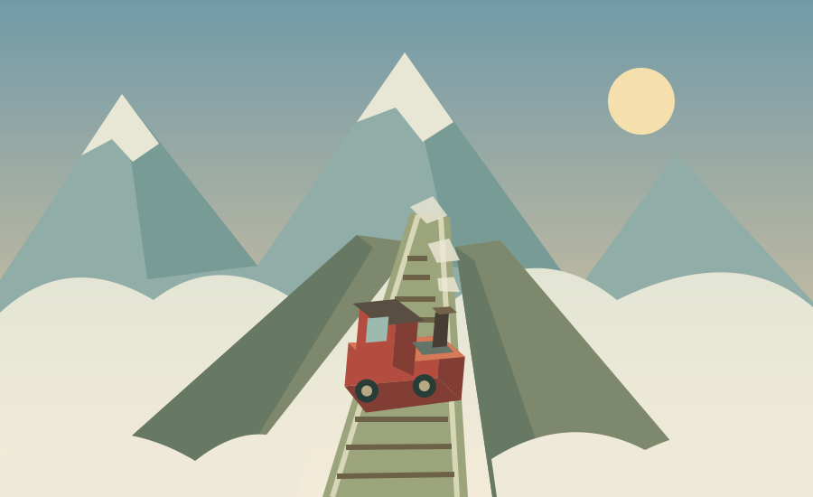
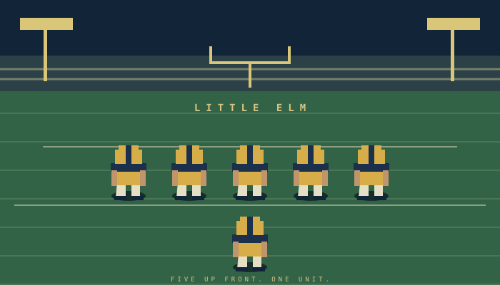

CITY HEIST
Your crew. Your city. Your getaway.
Prepare at home, hit the streets, and make it out.
AFTER CLASS
CHAT
Your games. Your classmates. One place.
- Grade chats
- Homework help
- Private DMs
- Groups
Sign up without a code · Chat access requires approval

Over the
Hill.
A little further. A little less hurry.
Take a classic 4×4 from amber woods to open sky.
Bring a friend when the shared server is available.
Tideline.
Your ship. Your responsibility.
Pirates, passengers, and a sea with other plans.

Sunday
Slide.
Suburban sweepers. City corners. Harbor runs.
Five tracks. Ten rides. A look of your own.

Rooftop
Rumble.
A little hang time. A shot worth holding.
Hold, jump, and release. Bring 2 or 4 players.

Summit
Run.
A little locomotive. A very long way down.
Jump the gaps. Find your track. Chase your best.

The
Trenches.
Five up front. One unit.
Snap, read, react. The offensive line is yours.
Daily tasks. Earn points. Visit the central shop to unlock your next ride →
THE GARAGE NOTICEBOARD
Got a good word?
Or a wild idea?
Leave a review, report a bug, or suggest what comes next. No sign-in. Usernames are public nicknames and are not verified. Please avoid personal information.